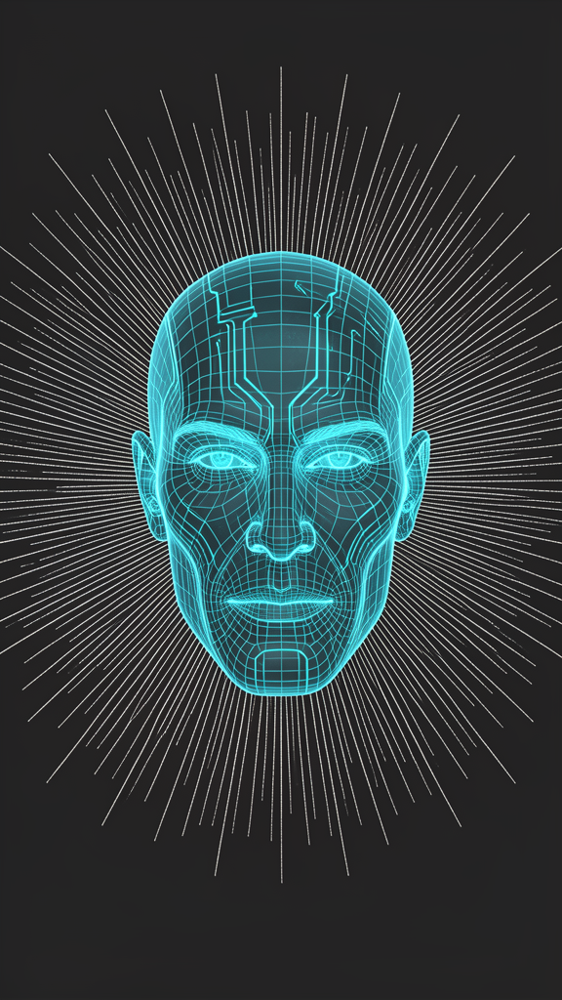

01
Hermes Runtime
The agent framework hosting every unit — tools, terminal, skills and scheduling in one loop.
Development stage of Jarvis — the flagship agent — and the specialised units that extend it. Built on Hermes, reasoning across a Claude and Grok MCP roadmap. No suits. Just the system.

Four AI units, each named after a Stark-lab intelligence. One shared memory fabric, distinct roles. Personal configuration and credentials are never exposed here — only capabilities.
The primary brain. A pragmatic senior-engineer agent running on Hermes, handling coding, systems, research and day-to-day automation. Verifies its own work with real tool output — plans dressed as progress don't count.
A dedicated long-memory unit with its own profile, chat interface and always-on service. Continuously fed a curated knowledge base and tuned for recall and legacy context rather than hands-on system work.
A remote worker node on a secure private mesh. Extends the roster onto a portable machine for on-device file, shell and process tasks — invoked deliberately, isolated from the core by design.
The physical helper of the lab — a real robot integrated through a custom control SDK. Bridges the software roster into the physical world for status, tasking and autonomous routines.
Where the build stands across three parallel tracks: the Hermes agent core, the Claude MCP integration, and the Grok MCP integration. Green = shipped, gold = in progress, hollow = planned.
Jarvis live on Hermes with tools, terminal and skills.
Cross-session memory + holographic fact store online.
EDITH split into its own isolated profile + gateway.
Growing procedural memory across domains, auto-curated.
Single dashboard to observe and command every unit.
Claude as the primary reasoning engine for Jarvis.
Full tool-use: files, shell, browser, vision, delegation.
Friday wired in as an opt-in MCP target over the mesh.
Dummy control surfaced through a custom SDK bridge.
Parallel Claude sub-agents for isolated workstreams.
Real-time X search + web signal via Grok tools.
Grok as a cross-check reasoner alongside Claude.
Streaming market/news signals into the roster.
Grok vision for image/video understanding tasks.
Auto-route tasks to Claude or Grok by strength.
Public-facing architecture. No credentials, addresses or personal data — just the shape of the system.
The agent framework hosting every unit — tools, terminal, skills and scheduling in one loop.
Dual-provider brains via MCP. Claude drives reasoning and tool-use; Grok adds live search and cross-checks.
Persistent cross-session memory and a holographic fact store with trust scoring.
Private encrypted network linking the core to edge nodes like Friday, on demand.
A custom SDK exposing physical hardware (Dummy) as a first-class unit.
Reusable, self-curating procedures that grow the roster's capability over time.